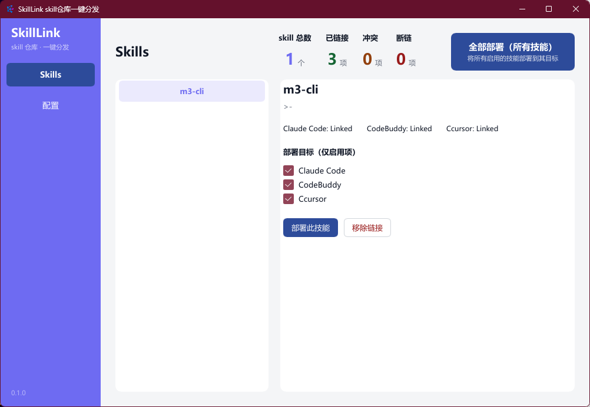
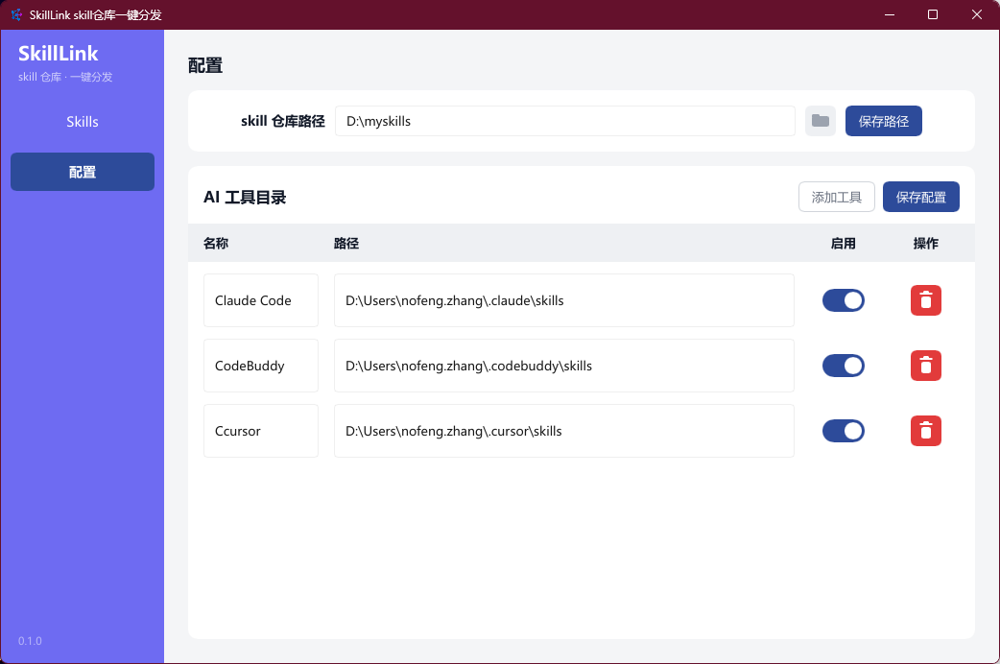

所有 AI 编程工具的 skills 集中存放，Windows junction 一键分发
Pure Rust + Slint native UI · 单个 exe · 零运行时依赖（无需 WebView2 / .NET）
支持 Claude Code · CodeBuddy · Codex · Cursor · Gemini CLI · OpenCode

Skills —— 左侧技能列表，右侧四态链接状态 + 勾选部署

配置 —— 中央仓库路径与 AI 工具目录管理
所有 skills 集中在一个目录（单一事实源），自动扫描含 SKILL.md 的子目录并解析 frontmatter。
通过 mklink /J 创建目录联接，无需管理员权限，源目录与目标目录保持实时同步。
移除链接仅删除 junction 本身，绝不穿透删除真实目录；冲突时自动备份为 .bak。
每个 skill × 每个目标目录的链接状态实时检测，部署前心中有数。
内置 Claude Code、Cursor 等主流工具默认路径，支持增删改、启用/停用。
纯 Rust 编译单个 exe，解压即用，配置持久化于 %USERPROFILE%\.skill-client\。
| 状态 | 含义 |
|---|---|
| NotLinked | 目标目录中不存在该 skill |
| Linked | 是 junction 且指向中央仓库对应 skill |
| Conflict | 目标处已存在真实目录/文件 |
| Broken | 是链接但指向失效 |
Releases 页下载 zip，解压后双击 skill-link.exe（Windows 10/11 x64）。
设置你的 skills 中央仓库路径，确认各 AI 工具的 skills 目录（默认值开箱即用）。
勾选要部署的 skill 与目标，点击部署；或「全部部署」一键同步所有。